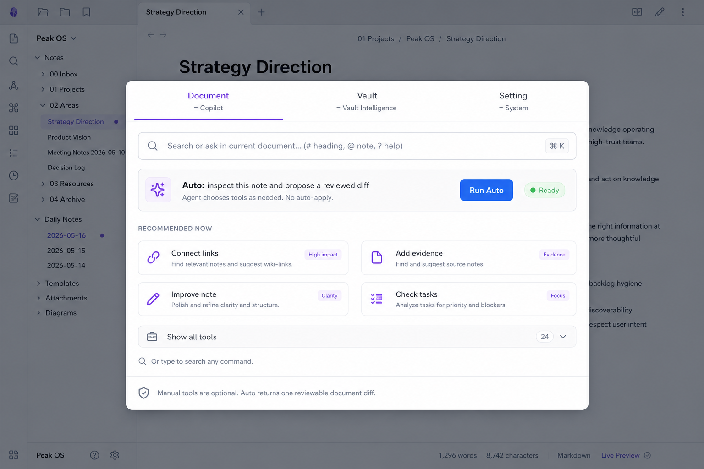
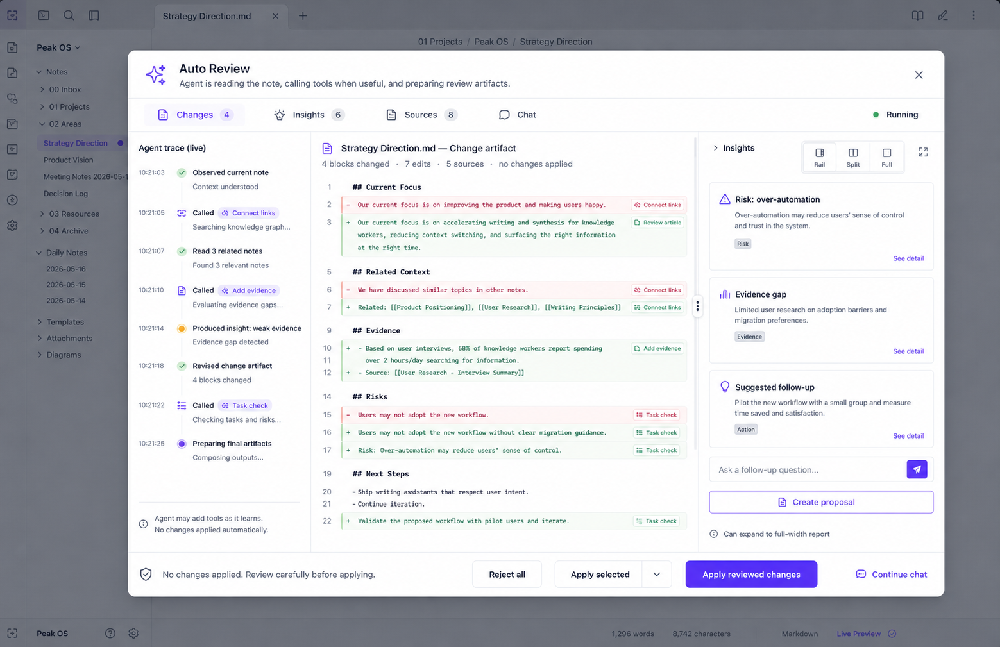
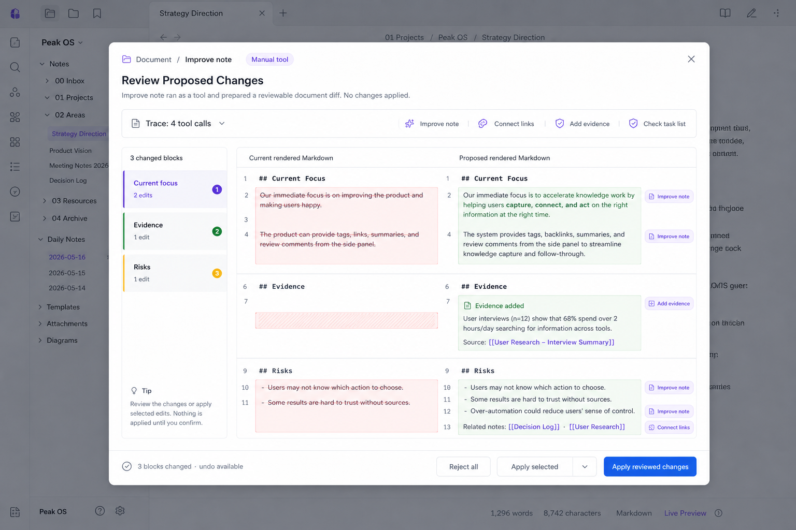
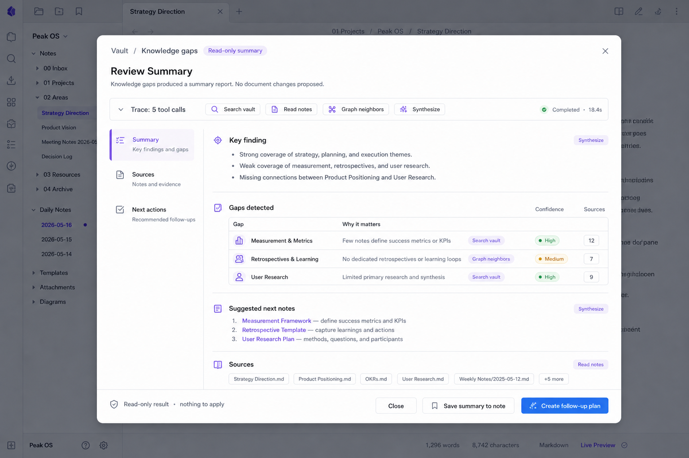

最终 UX Wireflow：从入口到 Review 的完整流转
这版报告按 wireflow 阅读：每个小框都是一个真实界面节点，箭头标注用户点击的按钮或 agent 产生的分支。 入口 panel 只负责捕捉 intent；Auto 和手动工具都会进入同一套 Agent Run / Review Surface； 最终根据 artifact 自动落到 Changes、Insights、Sources、Chat。
默认只展示 Auto 和 3-4 个当前最相关动作，其余能力通过搜索或 Show all tools 找到。
Agent 边观察边调用工具，trace 是行动记录，右侧 diff 随工具结果逐步更新。
Auto 可以同时产生 diff 和 insight。Diff 负责可应用改动，Insight 负责解释、来源、下一步和继续对话。
一图看完整流转
按钮点击到界面节点的关系



当前 note / selection 里点击 Copilot 或 Run Auto。
Document tab，Auto 是主入口。
观察上下文，按需调用工具。
Changes 主视图，Insights 可展开。
点击推荐动作，或搜索写入类能力。
工具只是 initial intent。
仍可读来源、查图谱、做风险检查。
整篇 rendered diff，不分散成小面板。
总结、体检、gap，或 Auto 判断无需改文档。
从搜索或推荐分析能力进入。
读 vault、sources、graph。
默认全宽，可继续对话。
切到 Vault tab，分析整个 vault。
Analyze / Synthesize / Maintain 合并。
查 index、graph、gap、health。
报告为主，批量修改进 proposal。
切到 Setting tab，检查模型、索引、skills。
运行环境，不是内容工作流。
检查 provider、index、tool schema。
展示问题、证据、建议操作。
Auto 路径
手动工具路径
Auto 里 Diff 和 Insight 如何共存
不是“写入 vs 只读”的功能分叉，而是一个 run 的两个结果层Auto 启动后不先问用户选哪些工具。Agent 在 ReAct 里边读上下文边调用工具，最后可能同时产生可应用的 change artifact 和解释性的 insight artifact。
用户最关心“会不会改我的笔记”。所以只要有修改建议，右侧默认打开 Changes，红绿 diff 逐行展示；每一行都可追溯到对应工具和来源。
如果这次只是体检、总结、发现 gap，界面不显示空 diff。它展示结论、证据和下一步，并保留输入框继续追问：也可以点 Create proposal 转成新的 diff run。
Insight 不是固定右侧小栏。它默认作为 diff 的旁路上下文出现；当内容变成长报告、vault health、knowledge gaps 或研究总结时， 用户可以切到更大的阅读区域，继续追问或把某段 insight 转成新的 change proposal。
有文档改动时使用。Changes 占主区域，Insights 作为 280-360px 旁栏，展示风险、来源、未应用建议和 follow-up。
用户拖动分隔线，Changes / Insights 可以 60/40、50/50 切换。适合一边看 diff，一边看长解释和来源。
点击 Insights tab 或 expand 后，Insights 占满主区域。顶部仍保留 Changes badge，底部保留 Chat / Save / Create proposal。
按钮到界面的映射
实现时可直接按这张表连 routing打开入口面板，并切到对应 tab。Document 是当前 note；Vault 是 vault intelligence；Setting 是系统和能力管理。
进入 Auto Review。左侧 live ReAct trace，右侧按 artifact 展示：有改动就默认 Changes + Insight rail；没有改动就默认 Insights full width；始终可以继续对话。
进入同一个 Diff Review shell。工具名称只是 initial intent；agent 仍可自然调用其它工具，diff line 上标 provenance。
进入 Insight Review shell。它不直接写回原文，但不是静态只读页：默认全宽阅读，可追问、保存、打开来源，或 Create proposal 进入 diff。
点击或 hover 可展开对应 trace/tool evidence：这个变更为什么出现，来自哪个工具和源文档。
最终保留的设计图
旧的稀疏版和超模按钮版作为探索，不进入主流程Auto 主路径 + 少量推荐动作
左 trace，右 diff，Insights 可拖拽/全宽
手动工具也进入统一 diff review
分析能力进入可对话的 insight review